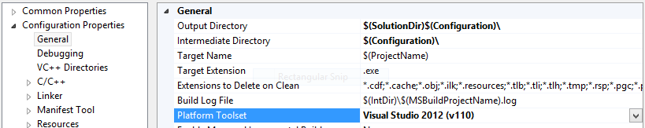

Targeting
By default Cinder on Windows targets Windows XP SP2 and later. This is dictated by the _WIN32_WINNT variable, which is typically defined in your project's preprocessor definitions. The value 0x0502 maps to Windows XP SP 2.

These are some general notes on Cinder's implementation on the Microsoft Windows platform.
By default Cinder on Windows targets Windows XP SP2 and later. This is dictated by the _WIN32_WINNT variable, which is typically defined in your project's preprocessor definitions. The value 0x0502 maps to Windows XP SP 2.
The Visual C++ 2012 and 2013 compilers (sometimes abbreviated VC11 and VC12, respectively) are fully supported by Cinder. These versions of Visual C++ have two toolsets (roughly, compilers) associated with them. For VC 2012 they are v110 and v110_xp. For VC 2013 they are v120 and v120_xp. The non-XP variants come installed automatically, and are able to target Windows Vista, Windows 7 and Windows 8. Cinder's audio requirements complicate the situation a bit (see note below), but if you don't need to target Windows XP the v110 or v120 compilers are typically the best choice. However if you do need XP support, you'll need to get the v110_xp or v120_xp compiler from Microsoft. For VC 2012 this is available with the Visual Studio 2012 Update 2.
After installing the update you can change the toolset of your project in the General properties in the Platform Toolset field.
 You'll need to do this for Cinder and rebuild it, as well as modifying your project in the same way. A longer discussion of this topic is available from Microsoft in this document.Cinder's audio support is written around XAudio2 on Windows. Unfortunately there is a schism between the Windows 8 SDK and prior versions. Specifically, the SDK included with Visual C++ 2012 and 2013 use version 2.8 of this API, while previously the API was only available via the DirectX SDK, and it shipped version 2.7.
Various pieces of Microsoft documentation describe the technical particulars. The document XAudio2 Versions is informative.
| Target | Compiler | XAudio | Notes |
| Win XP SP2+ | Visual C++ 2013 (v120_xp) | 2.7 | Requires DirectX SDK 2010, see note above on v120_xp |
| Win XP SP2+ | Visual C++ 2012 (v110_xp) | 2.7 | Requires DirectX SDK 2010, see note above on v110_xp |
| Win 8+ | Visual C++ 2012 (v110) | 2.8 | Requires setting _WIN32_WINNT >= 0x0602, see note below |
In order to target Windows 8 exclusively, you'll need to set the preprocessor variable _WIN32_WINNT to 0x0602 in the Preprocessor Definitions of your project settings. You'll also need to set this variable to the same value in Cinder itself and rebuild it.
Another alternative is to use the FMOD CinderBlock which is included with the distribution.